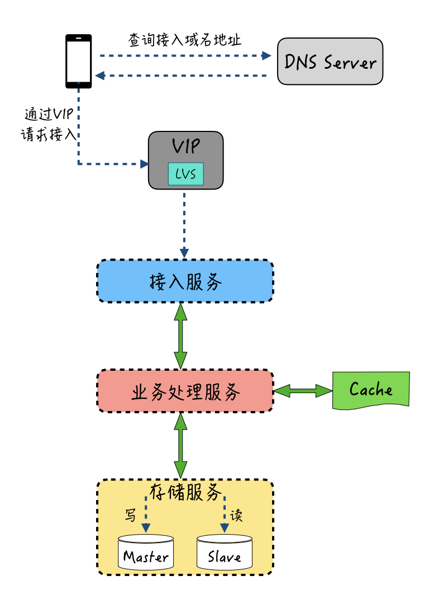
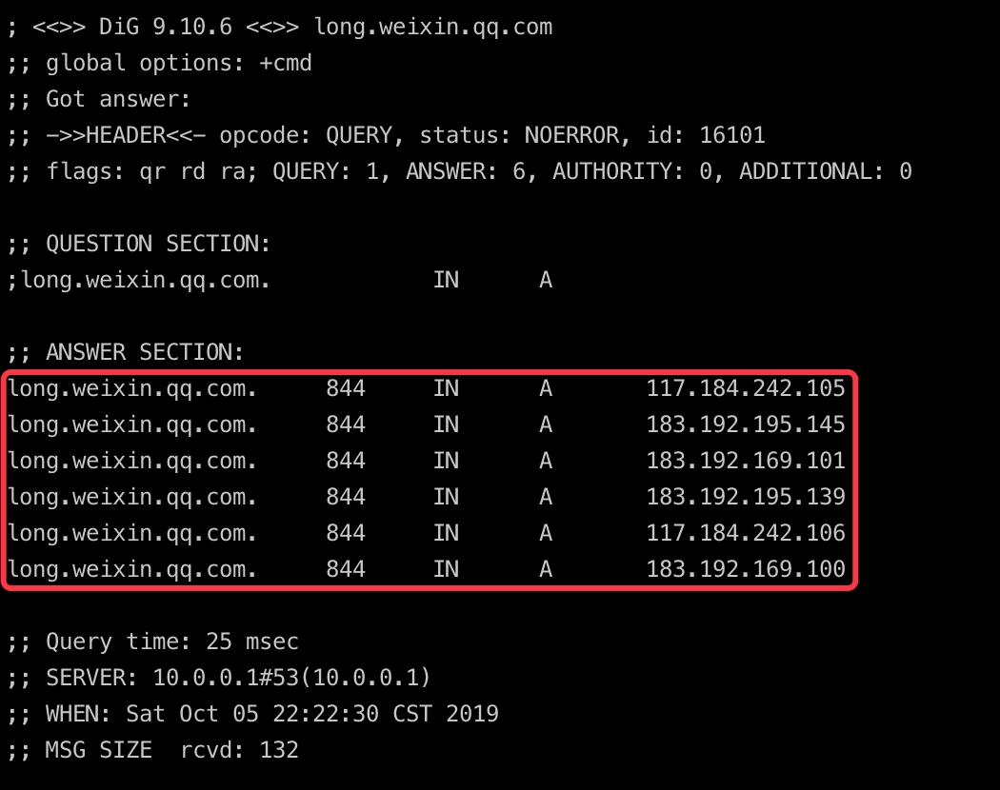
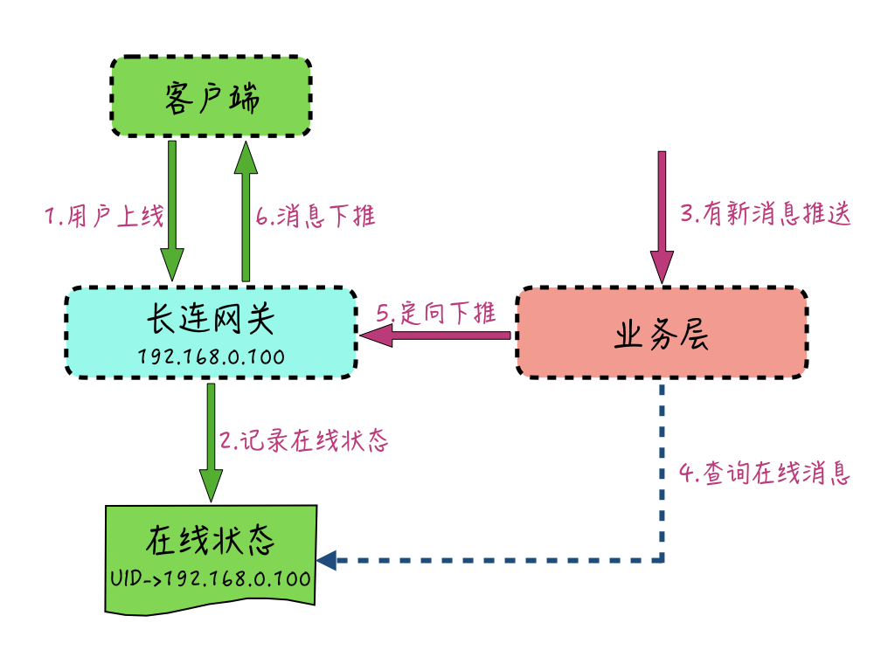
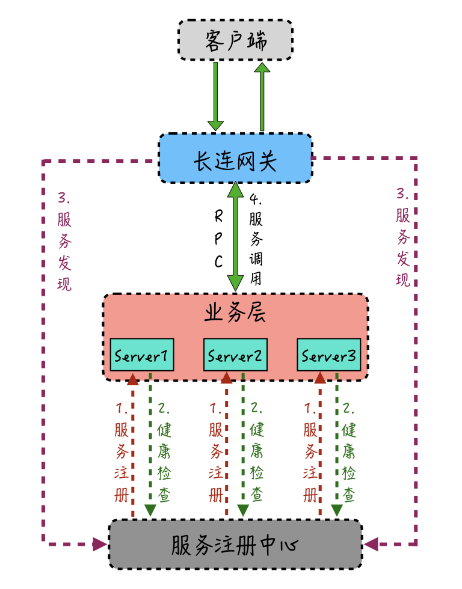

- 00 开篇词 搞懂“实时交互”的IM技术，将会有什么新机遇？.md.html
- 01 架构与特性：一个完整的IM系统是怎样的？.md.html
- 02 消息收发架构：为你的App，加上实时通信功能.md.html
- 03 轮询与长连接：如何解决消息的实时到达问题？.md.html
- 04 ACK机制：如何保证消息的可靠投递？.md.html
- 05 消息序号生成器：如何保证你的消息不会乱序？.md.html
- 06 HttpDNS和TLS：你的消息聊天真的安全吗？.md.html
- 07 分布式锁和原子性：你看到的未读消息提醒是真的吗？.md.html
- 08 智能心跳机制：解决网络的不确定性.md.html
- 09 分布式一致性：让你的消息支持多终端漫游.md.html
- 10 自动智能扩缩容：直播互动场景中峰值流量的应对.md.html
- 11 期中实战：动手写一个简易版的IM系统.md.html
- 12 服务高可用：保证核心链路稳定性的流控和熔断机制.md.html
- 13 HTTP Tunnel：复杂网络下消息通道高可用设计的思考.md.html
- 14 分片上传：如何让你的图片、音视频消息发送得更快？.md.html
- 15 CDN加速：如何让你的图片、视频、语音消息浏览播放不卡？.md.html
- 16 APNs：聊一聊第三方系统级消息通道的事.md.html
- 17 Cache：多级缓存架构在消息系统中的应用.md.html
- 18 Docker容器化：说一说IM系统中模块水平扩展的实现.md.html
- 19 端到端Trace：消息收发链路的监控体系搭建.md.html
- 20 存储和并发：万人群聊系统设计中的几个难点.md.html
- 21 期末实战：为你的简约版IM系统，加上功能.md.html
- 22 答疑解惑：不同即时消息场景下架构实现上的异同.md.html
- 结束语 真正的高贵，不是优于别人，而是优于过去的自己.md.html
- 捐赠
18 Docker容器化：说一说IM系统中模块水平扩展的实现
你好，我是袁武林。
在第10讲“自动智能扩缩容：直播互动场景中峰值流量的应对”中，我较为系统地讲解了直播场景中突发流量的应对策略。其中比较重要的一点就是：当有热点流量进来时，我们能够通过监控指标对服务进行快速扩缩容。
而快速扩缩容的一个重要前提，就是部署的服务和资源能够做到水平扩展。
那么，今天我们就来聊一聊服务和资源水平扩展的实现问题。
垂直扩展
首先从水平扩展(Scale out)的概念说起吧。
要解释水平扩展是什么，我们要先了解下与水平扩展相对应的另一个概念：垂直扩展（Scale up）。只有通过这两者可行性和实现层面的对比，我们才能更好地理解为什么水平扩展能力对于实现一个架构良好的系统如此重要。
当业务的用户量随着产品迭代不断增长时，相应的后端资源和服务器的压力也在逐渐加大。而解决资源和服务器瓶颈一个有效且较快的方式就是：提升资源服务器和应用服务器的单机处理能力，也就是对资源服务器和应用服务器进行“垂直扩展”。
提升单机硬件性能
要对资源和服务进行垂直扩展，一个简单粗暴但也比较有效的方式就是：增强单机服务器的性能。
比如：对CPU出现瓶颈的服务器进行升级，增加CPU核数和主频；对于网卡有瓶颈的服务器，升级到万兆网卡并接入到万兆交换机下；内存出现瓶颈导致系统吃Swap的情况，我们也可以将内存升级到更高配置来进行垂直扩展。一般情况下，通过对服务器硬件的升级，往往能快速解决短期的系统瓶颈问题。
增加单机服务处理能力
除了提升单机硬件的整体性能，我们还可以通过优化单机的服务进程处理能力，来实现对资源和服务的垂直扩展。
比如：我们部署的应用程序可以通过增加处理线程数，进一步榨干单机的硬件性能，以此提升服务进程整体的处理能力；或者通过扩大应用程序的使用内存，来提升请求的处理效率，如Java进程通过-Xmx增大堆内存空间，使用机器的本地缓存来优化访问速度；对于容易出现带宽瓶颈的业务来说，也可以通过架构改造，对收发的数据进行压缩，以降低数据传输量。
通过对单机服务架构和部署的优化，我们能够在不升级服务器硬件的前提下，提升单机服务的处理能力。
不过，虽然我们可以通过以上这两种方式来解决部分资源和服务的瓶颈问题，但不管是通过什么办法来提升服务器的单机性能，它总是会达到极限的。
所以，采用“垂直扩展”的方式，我们基本上只能解决短期的资源和服务瓶颈，而真正长远且有效的解决方案是：让资源和服务做到可以随时随地进行无差别的扩容，也就是对资源和服务进行“水平扩展”。
水平扩展
对于即时聊天的场景来说，用户的消息收发往往会牵涉到多层的服务和资源。因此，要让IM系统也能做到“水平扩展”，我们需要让IM系统涉及到的服务和资源都能够通过快速扩容，来缓解突发流量带来的压力。
我在课程第1讲“架构与特性：一个完整的IM系统是怎样的？”中，也有讲过一个典型的IM系统架构是怎样的，你可以参考下图：- 
客户端通过DNS Server或者HttpDNS，查询接入服务对外提供的公网VIP（虚拟IP）。这个公网VIP通过Keepalived绑定到多台LVS（Linux Virtual Server，Linux虚拟服务器）上，能够实现单台LVS故障后自动切换到另一台。当用户访问这个公网VIP时，就会被路由重定向到真正的LVS上。
LVS运行在操作系统内核态，会按照设定的负载均衡策略，将IP数据包分发到后端接入网关机，接入服务器再把数据透传给业务处理服务层，业务处理服务进行具体的业务逻辑处理，比如读写缓存和消息存储等。
那么我们就来看看，在上图所示的整个链路上，具体各层在出现压力和瓶颈时，如何做到“水平扩展”？
接入层如何水平扩展
首先，我们看下链路最外层入口的VIP。
对于LVS服务器来说，由于只是在TCP/IP层对数据包进行简单的转发，并不需要解析数据包给到应用层，所以服务器相应的处理性能是很高的，单机每秒数据包转发PPS能达到千万级别。因此在大部分情况下，LVS服务器本身不会成为瓶颈。
但是对于IM系统中的直播互动场景来说，由于存在瞬时上万级别的长连建连请求场景，单台LVS服务器可能会导致建连失败的情况。
针对这种情况，我们一般可以通过DNS轮询来实现负载均衡。
简单地说就是：在DNS服务器中，针对接入服务域名配置多个VIP；当用户访问接入服务时，DNS服务器就会通过轮询或者其他策略，来从A记录中选择某一个VIP供用户连接。

比如上图所示：微信长连接通道针对同一个域名进行DNS查询，就返回了多条A记录供接入设备选择。
在通过“DNS轮询多VIP”的水平扩展，解决了单VIP入口可能出现的瓶颈问题后，对于用户的消息收发来说，另一个容易出现瓶颈的点就是应用层的接入服务了。
要想解决这个问题，我们先从业务使用的角度来分析一下。
以大型聊天室或者大型直播间的场景为例，其链路压力一般来自于消息扇出后的下推，其他链路环节实际上对于聊天室成员增长，或者直播间在线人数增长并不会太敏感。
所以，正如在第10篇中所讲到的，我们要对那些容易随着用户热度增加，而出现流量突升的环节进行架构上的剥离，以便在出现流量峰值时，对这些拆分后相对较轻量的接入服务进行扩容。
另外，我们在设计接入服务时，要尽量做到无状态化。
无状态化的意思就是任意用户随时都可以连接到任意一台接入服务器上，这样我们的接入服务才可以随时进行“水平扩展”。除了接入用户连接外，当服务端有消息需要推送给客户端时，业务逻辑层需要把消息精确推送到具体某个用户连接的网关机上。
要想实现接入层的水平扩展解耦，我们一般可以通过维护一个中央的用户和“所在网关机IP”的映射关系，或者通过网关机IP维度的Topic，来利用消息队列进行精准推送（比如离线消息的拉取）。通过中央的“在线状态”服务，我们就能让接入层和业务层通过这个中央资源来进行交互，让接入层做到无状态化。其实现方式如下图：- 
用户通过接入服务上线后，接入服务会在中央资源中（比如Redis）记录当前用户在哪台网关机上线。如果业务层有消息需要推送给这个用户时，通过查询这个中央资源，就能知道当前用户连接在哪台网关机上，然后就可以通过网关机的API接口，把消息定向投递推送给用户了。
业务层如何水平扩展
利用DNS轮询“单域名多VIP”，我们解决了接入层VIP入口的瓶颈问题。此外，对于应用层的接入服务的瓶颈问题，我们可以结合业务场景，通过“服务拆分”，将容易出现峰值波动的应用接入服务进行抽离，以便于接入层扩容；最后通过“中央的在线状态资源”，让接入层做到完全“无状态”，从而实现了接入层的“水平扩展”。
虽然很多时候，我们的业务层不像接入层一样，对流量的波动那么敏感，但在实际业务中，每天的用户访问也会呈现出比较明显的流量变化。比如在很多聊天场景中，凌晨和上午的流量相对会低一些，而晚上的用户访问量会更大。
因此，为了更好地提升服务器资源利用率，我们的业务层也需要做到“水平扩展”。我们可以在流量低峰时，让业务层服务保持较低的部署规模；在晚上高峰时，通过扩容来保证用户访问的速度。
由于接入层对业务层是强依赖关系，因此业务层水平扩展的关键在于：如何让业务层在扩缩容后，能够被接入层及时感知到？
对于这个关键问题，业界比较常见的解决方式是：对业务层进行“服务化”改造，以此让接入层通过“自动服务发现”，来感知到业务层的变化。
比如，通过Thrift、gRPC、Dubbo、Motan等RPC框架，结合服务发现和健康检查组件，就能对业务层进行“服务化”的改造了。这里我简单画了一张图，来说明一下对业务层“服务化”改造的实现过程。- 
业务层的多台服务器在启动上线时，先在“服务注册中心”进行服务注册，登记当前业务机器支持调用的“服务”；启动后，服务注册中心通过“注册中心主动检测”或者“业务服务器主动上报”的方式，定期对服务的可用性进行健康检查，不可用的业务服务器会从注册中心摘除。
长连网关机在需要调用业务层服务时，会先通过服务发现、获取当前要用到的服务所注册的业务服务器地址，然后直连某一台具体的业务服务器进行RPC服务调用。
这样，通过对业务层进行“服务化”改造，利用服务注册和服务自动发现机制，我们就能够让业务层做到完全的无状态化。不管我们的业务层如何进行扩缩容，接入层也能随时调用到业务层提供的服务，从而实现了业务层的“水平扩展”。
资源层如何水平扩展
解决了业务层水平扩展的问题，我们再来看一下资源层是如何“水平扩展”的。
对于即时消息场景中，依赖度非常高的资源层来说，当面临高并发的突发流量时，同样容易出现读写的瓶颈。比如前面讲到的消息内容和消息索引的缓存、维护未读数的资源、存储离线消息的资源，等等，当用户量和消息收发频率很高时，也都会面临较大压力。
这里所说的资源层，包括我们使用到的缓存和存储。
缓存的水平扩展，咱们在上一篇中有讲过：针对数据读取压力的问题，我们可以通过增加从库、增加L1缓存、应用层支持本地缓存的多级缓存模式等手段来解决。
而对于支持数据写入的主库来说，由于其存在单主的情况，所以在写入量大时，也容易出现瓶颈。因此，我们可以通过分片（Sharding）机制来解决。
下面我用聊天场景中“最近联系人”的缓存来举个例子。
当用户的消息收发非常频繁的时候，主库的缓存更新压力会很大。通过分片机制，我们就可以把不同用户的“最近联系人”缓存分散到不同的缓存实例中；通过增加缓存实例的方式，来缓解单实例的写入压力。
同样，对于存储层资源来说，我们也可以通过增加从库和数据分片，对资源层进行水平扩展，从而提升资源的压力应对能力。
容器化部署
现在，我们针对接入层、业务层、资源层的水平扩展方案都有了，接下来要考虑的就是如何实施的问题。
比如，接入层服务和业务层服务在出现瓶颈的时候，我们如何进行快速扩容呢？
目前，业界比较成熟的方案是通过Docker等容器化技术来解决。
Docker容器化就是指：当我们的服务需要扩容时，先把服务打包为Docker镜像，通过运维系统或者第三方的Kubernetes等容器管理服务，来动态分发镜像到需要部署的机器上，并进行镜像的部署和容器启停。
这里的Docker镜像，你可以理解为一个“包含服务运行代码和运行环境的最小的操作系统”。当镜像分发到需要部署的机器上后，启动此镜像的容器，这个“最小化的操作系统”就能够把你的服务运行代码快速部署并运行起来。
那么，为什么Docker等类似的容器化技术能够让我们的服务做到快速扩容呢？
举个例子，我们在聊天场景中用到的图片和视频转码服务，在生成缩略图和处理视频时，需要先安装一些本地化的工具。
在没有容器化部署前，我们要扩容这个图片或视频服务时，就需要先在相应的部署机器上安装一堆工具，然后才能部署服务。不过有的时候，安装工具对操作系统的内核版本和其他依赖有要求，因此经常会出现有的机器装不上，有的机器还需要安装些别的依赖等情况，整个的扩容效率很低。
而有了Docker等容器化技术之后，就能非常方便地解决以上这些问题了。
我们可以以某一个固定版本的操作系统镜像为基础，然后在构建自己的应用镜像时，再安装上依赖的工具包。这样，所有的依赖都已经固化到“最小化的操作系统”中了，不再依赖部署机器本身的操作系统版本，也不需要在部署机器上安装各种工具了。
可见，通过Docker等容器化技术，我们能非常方便地解决服务部署复杂和低效的问题，你可以在以后的实际业务中尝试运用一下。
小结
接下来简单回顾一下今天课程的内容。
这一讲，我主要针对即时消息场景中，链路各层如何实现快速地“水平扩展”，介绍和分析了一些解决瓶颈问题的方案。
由于“垂直扩展”的可扩展性依赖于单机自身的硬件能力，并不能彻底解决资源和服务器“无限扩容”的问题，因此需要链路各层能够做到“水平扩展”。
各层的水平扩展的实现，有以下几种参考方案。
针对接入层的水平扩展，我们需要解决好两个瓶颈问题：- 一个是接入层的入口VIP瓶颈问题，我们可以针对单域名支持多VIP映射，并通过DNS轮询来进行负载均衡；- 而针对业务自身的接入层服务，我们可以通过中央的“在线状态”资源，来解耦业务层的依赖，从而实现水平扩展。
针对业务层的水平扩展，我们可以进行“服务化”改造，依托“服务注册中心”和“服务自动发现”解决调用方寻址问题，实现业务层的水平扩展。
针对资源层的水平扩展，我们可以通过数据分片机制缓解主库和从库压力，还可以通过多从库提升读取能力，实现资源的水平扩展。
在链路各层的水平扩展的具体实施上，我们可以借助Docker等容器化技术，来屏蔽部署机器的差异。通过应用镜像的自定义部署环境，来提升链路各层水平扩展时的部署效率。
服务和资源的水平扩展能力，决定了我们的系统架构随着业务发展是否具备“高可扩展性”，也决定了这个架构的生命周期。
因此，我们在设计一个系统的时候，可以先问一下自己：我设计的这套架构是否能够随着业务的增长，相应的“业务支撑能力”也能随着服务的“水平扩容”做到线性的提升？相信当你开始思考这些问题的时候，你离成为一位合格的架构师也越来越近了。
最后给大家留一道思考题：要想解决资源层的写入瓶颈，除了分片机制外，还有什么办法能解决资源写入瓶颈的问题呢（比如直播间观看人数的计数资源）？
以上就是今天课程的内容，欢迎你给我留言，我们可以在留言区一起讨论，感谢你的收听，我们下期再见。
© 2019 - 2023 Liangliang Lee. Powered by gin and hexo-theme-book.